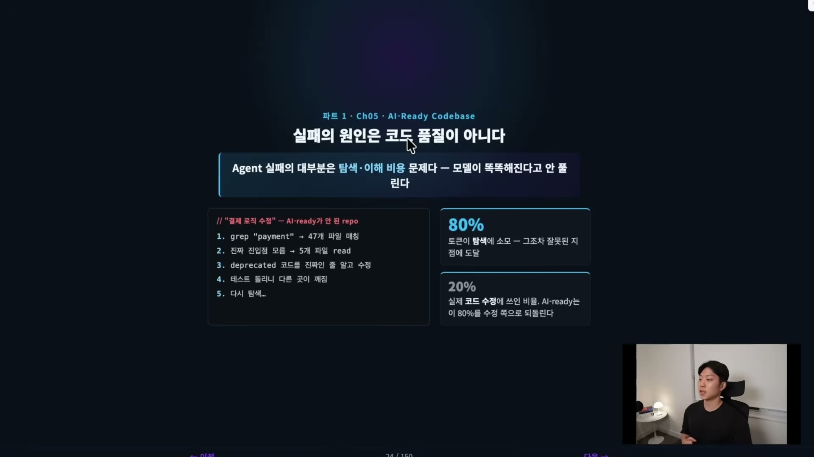
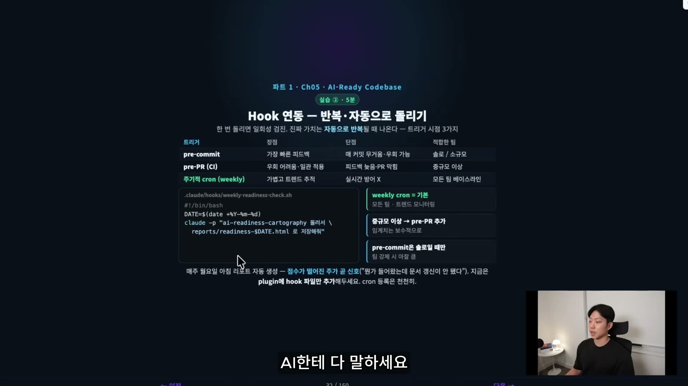
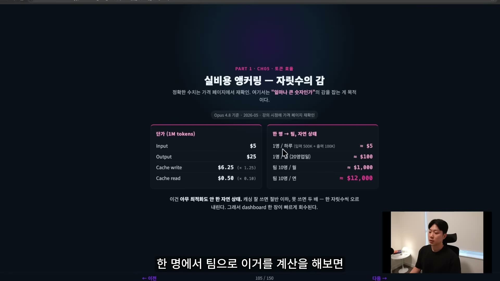
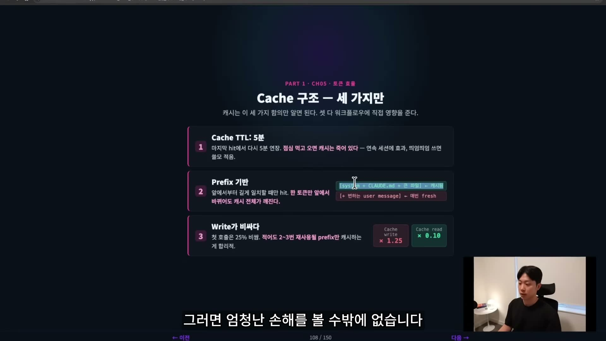
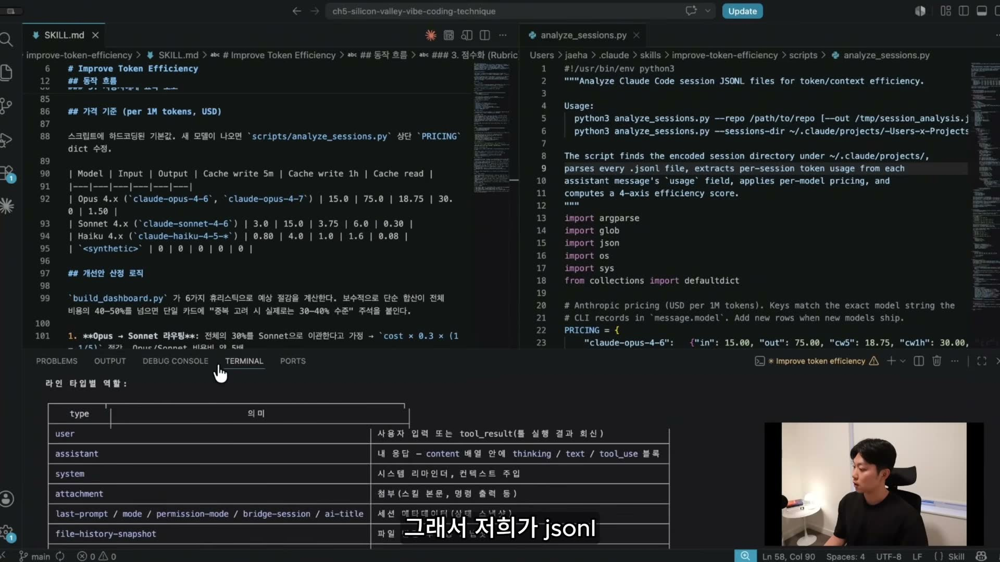

실리콘밸리(Meta) 출신 개발자가 진행하는 "Agentic Engineering" 시리즈의 두 번째 강의다. 주제는 두 개 — AI가 길 잃지 않는 코드베이스(AI-Ready Codebase)를 만드는 법, 그리고 자산이 늘수록 폭증하는 토큰 비용을 숫자로 관리하는 법(Token Efficiency). 두 가지 모두 개인의 감이 아니라 점수·대시보드·Cost Gate라는 팀 공유 자산으로 박아 두는 방식으로 풀어낸다. 아래는 46분 강의를 슬라이드·데모 화면과 함께 정리한 것이다.
강의의 첫 번째 논지는 명확하다. CLAUDE.md 같은 지침 문서를 아무리 잘 써도, 코드베이스 자체가 미로면
Agent는 길을 잃는다. 발표자는 이를 지침(법) vs 지형(땅)의 관계로 설명한다. CLAUDE.md는
"이렇게 일해라"라는 법·지침이고, 코드베이스는 Agent가 실제로 밟고 다녀야 하는 지형이다. 지형이 험하고 헷갈리면
아무리 좋은 지도를 줘도 소용이 없다.
AI-Ready 코드베이스란 Agent가 길을 잃지 않고 효율적으로 작업하도록 설계된 코드베이스를 말한다. 사람 개발자는 몇 주에 걸쳐 머릿속에 지도를 그리지만, Agent는 매 세션 "백지 상태(fresh)"에서 다시 시작한다. 그래서 지형은 탐색 첫 60초 안에 진입점과 로직 흐름이 파악될 만큼 명확해야 한다.
발표자는 Agent 실패의 대부분이 "로직·지능" 문제가 아니라 탐색·이해 비용 문제라고 잘라 말한다.
모델이 똑똑해진다고 풀리는 게 아니라는 것이다. AI-ready가 안 된 repo에서 "결제 로직 수정"을 시키면 이런 일이
벌어진다: grep "payment" → 47개 파일 매칭 → 진짜 진입점을 몰라 5개 파일을 읽고 → deprecated 코드를
진짜인 줄 알고 수정하고 → 테스트를 돌리니 다른 곳이 깨지고 → 다시 탐색.

"Agent 실패의 대부분은 탐색·이해 비용 문제다 — 모델이 똑똑해진다고 안 풀린다."
AI-Ready 환경은 두 단계로 만든다. 순서가 중요하다. 1단계 Codebase Sanity("코드가 건강한가")가 선결 조건이고, 2단계 Cartography("지도가 있는가")가 가속 장치다. Sanity 없이 Cartography만 그리면 "거짓말하는 지도"가 된다 — 건강하지 않은 코드 위에 그린 지도는 Agent를 더 확신에 차서 틀린 길로 안내한다.
2단계 Cartography(지도 그리기)는 구체적으로 네 가지를 남기는 작업이다: ① 어디서부터 읽어야 하는지 진입점(entry point)을 명시하고, ② 모듈이 서로 어떻게 얽히는지 의존 그래프를 그리고, ③ 이 프로젝트에서만 쓰는 용어를 도메인 용어집으로 외부화하고, ④ "여긴 진짜 같지만 죽은 코드" 같은 함정 지점(gotcha)을 표시해 둔다. Agent가 첫 1분에 읽을 지도가 바로 이것이다.
흥미로운 건 이 항목들이 새로운 얘기가 아니라는 점이다. 테스트·컨벤션·데드 코드 정리는 원래 사람 중심으로도 가치가 있었다. 그런데 Agent 시대에는 같은 항목이 다른 이유로 더 중요해진다.

발표자는 repo의 AI 준비도를 자동 채점하는 커스텀 스킬 ai-readiness-cartography를 직접 시연한다.
/skills에서 cartography를 찾아 실행하면, 7개 카테고리를 100점 만점으로 채점한다.

채점 로직은 그냥 블랙박스가 아니라 score.py 안에 정규식 휴리스틱으로 구현돼 있다. 예를 들어
Context Quality(카테고리 C)는 문서에 ## Purpose 같은 canonical 헤딩, 패턴 매칭, 의존성 서술 등이
있는지를 다섯 문항(Q1~Q5)으로 점수화한다. 발표자는 "이 Rubric이 절대적인 건 아니다"라고 못 박는다 — 팀에 맞게
가중치를 바꾸라는 뜻이다.

ai-readiness-cartography/scripts/score.py — 각 문항을 정규식(RE_PURPOSE_HEADING, RE_PATTERN_HEADING, RE_NON_OBVIOUS, RE_DEPS_HEADING)으로 pass 처리하고 카테고리별 점수로 합산한다.# score.py — 카테고리 C(Context Quality) 채점 일부
for m in modules:
if RE_PURPOSE_HEADING.search(text) or "owns" in text.lower() or "configures" in text.lower():
q_pass[0] += 1
if RE_PATTERN_HEADING.search(text):
q_pass[1] += 1
if RE_NON_OBVIOUS.search(text):
q_pass[2] += 1
if RE_DEPS_HEADING.search(text) or "depends on" in text.lower():
q_pass[3] += 1
# Q5: tribal store presence (binary, project-wide)
q5_score = 4 if has_tribal_store else 0
# 각 문항 4점 만점 · Q1~Q4 = 4 * 평균 pass 비율
sub = {
"C_Q1_Owns": round(4 * q_pass[0] / n),
"C_Q2_Patterns": round(4 * q_pass[1] / n),
"C_Q3_NonObvious": round(4 * q_pass[2] / n),
"C_Q4_Dependencies":round(4 * q_pass[3] / n),
"C_Q5_TribalStore": q5_score,
}
pts = sum(sub.values())
실행 결과, 데모 프로젝트(카카오톡 채팅 CSV 분석 Next.js 웹앱)는 54/100 · AI-Fragile(에이전트 취약)
등급을 받는다. 대시보드는 카테고리별 점수와 함께 "구조 지도"까지 그려 준다 — 어느 모듈에 CLAUDE.md가
없고, 어디서 의존성이 끊기는지가 한눈에 보인다. 흥미로운 디테일: 자동 스크립트는 처음에 22/100(AI-Hostile)을
줬지만, 그중 hallucinated path 3건이 모두 false positive여서 manual 보정 후 54/100이 됐다는 주석까지 붙는다.

한 번 채점하면 일회성 스냅샷일 뿐이다. 진짜 가치는 자동으로 반복될 때 나온다. 발표자는 트리거 시점 세 가지를 비교한다: pre-commit(가장 빠른 피드백, 솔로·소규모), pre-PR(CI)(우회 어려움, 중규모 이상), 주기적 cron(weekly)(가볍고 트렌드 추적, 모든 팀 베이스라인). 기본값은 weekly cron — 점수가 떨어진 주가 곧 "뭔가 들어왔는데 문서 갱신이 안 됐다"는 신호다.

weekly-readiness-check.sh. "지금은 plugin에 hook 파일만 추가해 두세요. cron 등록은 천천히."# .claude/hooks/weekly-readiness-check.sh
#!/bin/bash
DATE=$(date +%Y-%m-%d)
claude -p "ai-readiness-cartography 돌려서 \
reports/readiness-$DATE.html 로 저장해줘"
나아가 ROI 섹션에서 나온 개선안(모듈별 CLAUDE.md 생성, GitHub Actions에 Lint/Test 자동화,
Architecture 문서에 Mermaid 다이어그램 추가 등)을 Agent가 자동으로 PR로 만들게 할 수도 있다. 핵심은 이것을
개인 스크립트가 아니라 팀 레벨 자산으로 올려, 비용은 낮추고 성공률은 높이는 기반으로 삼는 것이다.
두 번째 파트는 비용이다. 팀이 자산(CLAUDE.md, Second Brain 문서, grade 스킬, TDD 가드 hook…)을
늘릴수록 매 턴 주입되는 컨텍스트가 커지고, 토큰 소비와 비용이 함께 불어난다. 먼저 발표자는 "토큰"이 무엇인지부터
짚는다.

"한국어로 쓴 1,000줄 CLAUDE.md는 같은 내용의 영어보다 두 배 가까이 토큰을 먹는다."
글로벌 팀이라면 기술 지침 문서를 어떤 언어로 쓸지도 비용 차원에서 한 번 검토할 가치가 있다는 얘기다.
발표자는 비용을 "얼마나 큰 숫자인가"의 감으로 잡게 한다. 정확한 수치는 강의 시점(Opus 4.8 기준·2026-05)의 가격 페이지에서 재확인하라고 전제하면서, 1M 토큰당 단가를 이렇게 제시한다.

이건 아무 최적화도 안 한 자연 상태다. 발표자는 여기서 관점을 한 번 뒤집는다 — 개인에게 하루 $5는 "그냥 커피값"이라 최적화 동기가 약하지만, 회사 관점에선 같은 낭비가 인원×근무일로 곱해져 연 수만 달러가 된다. 캐싱을 잘 쓰면 절반 이하로, 못 쓰면 두 배로 — 한 자릿수씩 오르내린다. 그래서 대시보드 한 장이 빠르게 회수된다. 그 갈림길의 핵심 도구가 Prompt Caching이다.
캐시는 세 가지 함의만 알면 된다. 셋 다 워크플로우에 직접 영향을 준다. ① TTL 5분 — 마지막 hit에서 다시 5분 연장되므로 연속 세션엔 효과가 크지만, "점심 먹고 오면" 캐시는 죽어 있다. ② Prefix 기반 — 앞에서부터 길게 일치할 때만 hit. 한 토큰만 앞에서 바뀌어도 캐시 전체가 깨진다. ③ Write가 비싸다 — 첫 호출은 25% 비싸므로, 적어도 2~3번 재사용될 prefix만 캐시하는 게 합리적이다.

[system + CLAUDE.md + 큰 파일]은 캐시되고 [+ 변하는 user message]는 매번 fresh. cache write ×1.25, cache read ×0.10.가장 비싼 실수: 세션 도중 모델을 바꾸면 프리픽스가 통째로 달라져 캐시가 전부 무효화된다. Opus로 시작해 중간에 Sonnet으로 갈아타는 순간, 그 뒤 모든 turn이 cache read($0.50)가 아니라 full input($5)로 다시 계산된다 — 정적 지침 파일을 세션 중간에 수정하는 것도 같은 결과다.
또 하나 흔한 실수는 "현재 시각"처럼 매번 바뀌는 값을 프리픽스 맨 앞에 두는 것이다. 안티패턴은
[현재 시각] → [CLAUDE.md] → [Second Brain] 순서 — 시각이 매초 바뀌니 뒤의 문서 전체를 매번 다시
읽어 캐시가 무의미해진다. 정답은 정적 문서를 프리픽스 위에 두고, 동적인 사용자 메시지·타임스탬프를 맨 아래로
내리는 것이다.
발표자가 평소 쓰는 6가지 최적화를 표로 정리한다.

/compact로 적시 압축 — 컨텍스트 폭주 전에 핵심만 남김.
AI Readiness와 짝을 이루는 두 번째 스킬 improve-token-efficiency다. Claude Code가 남기는
JSONL 세션 로그를 파싱해 세션별 토큰 사용을 점수화한다. 채점 로직은 analyze_sessions.py에
하드코딩된 per-model 가격표(PRICING dict)를 기준으로 4개 축을 계산한다.

improve-token-efficiency 스킬. analyze_sessions.py가 ~/.claude/projects/ 아래 인코딩된 세션 디렉터리를 찾아 모든 .jsonl의 usage 필드를 파싱하고, per-model 가격을 적용해 4축 효율 점수를 계산한다.# analyze_sessions.py — per-model 가격 (USD per 1M tokens)
# Model | Input | Output | Cache write 5m | Cache read
PRICING = {
"claude-opus-4-6": {"in": 15.0, "out": 75.0, "cw5": 18.75, "cr": 1.50},
"claude-opus-4-7": {"in": 15.0, "out": 75.0, "cw5": 18.75, "cr": 1.50},
"claude-sonnet-4-6": {"in": 3.0, "out": 15.0, "cw5": 3.75, "cr": 0.30},
"claude-haiku-4-5": {"in": 0.80,"out": 4.0, "cw5": 1.0, "cr": 0.08},
}
생성된 "Claude Code Session Efficiency Report"는 등급 히스토그램(A+~F), 비용 대비 점수 버블 차트, 비용 상위 세션 Top 20 파레토 표를 보여 준다. 평가 기준(Rubric)은 네 축의 가중 합이다.

대시보드가 "이미 쓴 비용(사후)"을 보여 준다면, Cost Gate는 사전·실시간(예산 초과 직전 신호)으로 통제한다. 단순한 두 종류면 충분하다.

cost-flag 라벨 부착(CI에서 같은 로직).발표자는 이 게이트가 "이번 강의(8번)의 평소 최적화"와 "다음 강의(10번)의 폭주 방지"의 경계에 걸쳐 있다고 짚는다. 같은 자산이지만 강도가 다르다 — 8번은 경고와 가시화까지, 10번은 강제 정지 권한(경고가 아니라 세션을 죽인다)까지. 자율성을 죽이는 결정은 10번의 몫이다.
결론은 한 문장이다. "절약하자"는 구호로는 아무도 안 아낀다. 모두가 같은 정의로 같은 숫자를 보고 같은 표를 참조할 때, 비용은 알아서 내려온다. 이를 위해 오늘 만든 것 — Dashboard 스킬(세션 JSONL → HTML 리포트), Cost Gate 정책, Do/Don't 표, 해석 5단계 흐름 — 을 개인 스크립트로 두지 말고 팀 plugin·wiki에 공유 자산으로 박아 두라는 것이다.